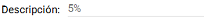
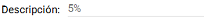

|
Descuentos por Artículo
|
Anterior Inicio Siguiente |
1. En primer lugar, se debe buscar el artículo de proveedor al cual queremos asignarle
descuentos. Indicando o no, datos del artículo (código original, descripción, etc) dentro
del cuadro “Datos Artículos”, dar clic en el botón.
2. Una vez seleccionado el artículo, podemos observar los descuentos que tiene asignados
dicho artículos. A su vez, podemos seleccionar que solo nos muestre aquellos descuentos
vigentes al día de la fecha seleccionando el check.
3. Debemos seleccionar el porcentaje de descuento en el campo  , como así también la Fecha Desde y Fecha
Hasta de vigencia del mismo. Además, podemos observar la descripción del porcentaje
elegido dentro del cuadro.
, como así también la Fecha Desde y Fecha
Hasta de vigencia del mismo. Además, podemos observar la descripción del porcentaje
elegido dentro del cuadro.
4.Ya confirmados los datos, dar clic en el botón para agregar el descuento.